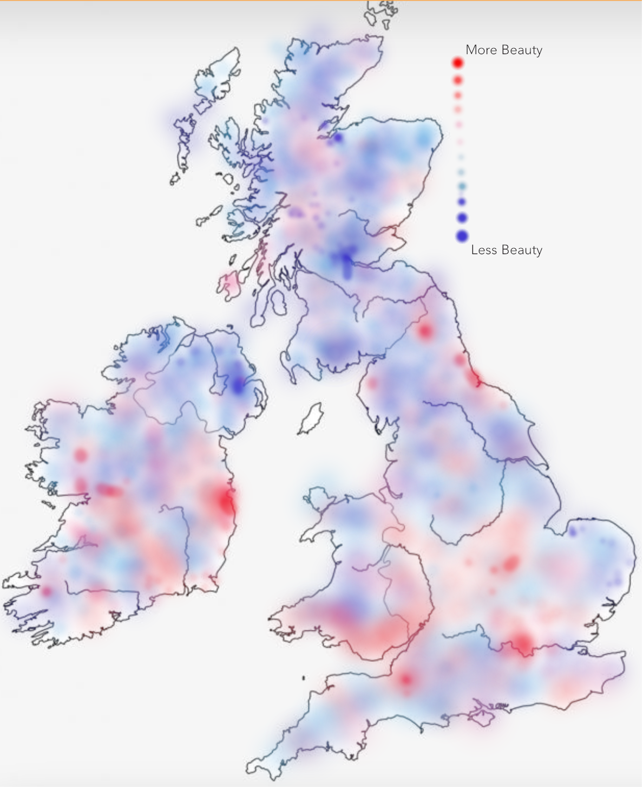

Galton's exploration of utopian ideals, exemplified in 'Kantsaywhere' and his 'beauty map' of the British Isles, reveals his strong ambition to shape an ideal society guided by selective genetic standards and personal aesthetic preferences that conveniently for him aligned with his subjective judgments.

Galton envisioned 'Kantsaywhere' as a society adhering to his ideals of racial hygiene, populated by individuals selectively bred to enhance genetic and aesthetic traits.